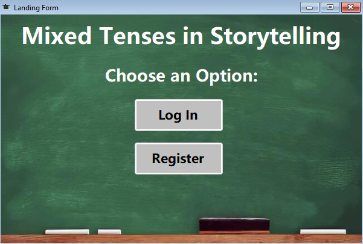

Mixed Tenses in Storytelling
First Form - Landing Form
The first form is just an opening form to show the name of the porject and redirect the user to the Log In or Register Forms.
Second Form - Log In Form
The second form is a log in page where you can enter your username and password and if the credentials are valid, you will be redirected to next form. At the bottom there is a register button which will redirect the user to the registration form.
Third Form - Register Form
The third form is a registration form. You can input your username and password and if they are valid you'll be prompted with a Message asking you if you want to register. If you click yes your registartion will be saved in a text file and you will be able to log in through the Log In Form.
Fourth Form - Information Form
After successfully loging in your account you will be redirected to the Information Form where you can choose a topic like "Mixed Tenses In Storytelling" and read about it. After reading about it you can choose to see a sample story which uses Mixed Tenses in Storytelling or test your knowledge with a quick test.
Fifth Form - Test Form
In the test form you have 4 questions about Mixed Tenses in Storytelling. You can pick out of 4 answers but only one is correct and for each question there is an explanation. With the check button you can see if your answer is correct. With the next and previous buttons you can go back and re-check a question. At the top left corner you can see your final result.
Sixth Form - Sample Story Form
The Sample Story Form is a simple form with a sample story showing how to use Mixed Tenses in Storytelling.